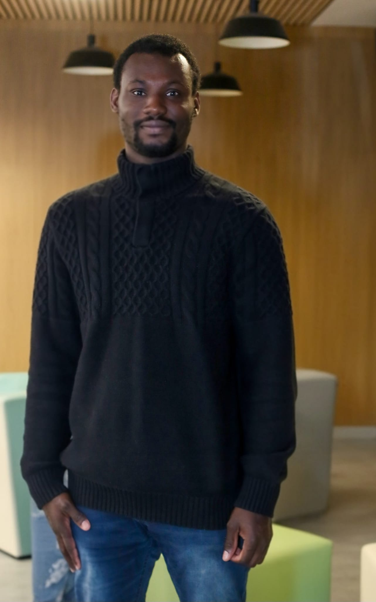

VIE ASSOCIATIVE / NOUVELLE PRÉSIDENCE
Ahmet Tambedou,
nouveau président
de l’AESM
Un nouveau chapitre s’ouvre pour les étudiants sénégalais de Metz.
Ahmet Tambedou est le nouveau président de l’Association des Étudiants Sénégalais de Metz. Il succède à Oumar Ka Thiam et prend la tête d’une association dont la force repose sur la solidarité, l’entraide et l’engagement de ses membres.

Félicitations et plein succès pour ce nouveau mandat
L’AESM adresse ses chaleureuses félicitations à Ahmet Tambedou et lui souhaite pleine réussite dans ses nouvelles fonctions. Que ce mandat soit porté par l’écoute, le rassemblement et des actions utiles à la communauté étudiante sénégalaise de Metz.
Présider l’association, c’est accompagner des parcours, être présent dans les moments difficiles et créer des occasions de se retrouver. Nous lui souhaitons l’énergie, la disponibilité et l’esprit collectif nécessaires pour faire vivre cette mission, avec toutes celles et tous ceux qui s’engagent à ses côtés.
Des engagements à faire vivre ensemble
Durant sa campagne, Ahmet Tambedou a mis en avant le développement de partenariats utiles, le renforcement des aides aux étudiants et le vivre-ensemble. Ancien membre de la commission sociale en 2024-2025, il a placé la solidarité et l’ambition collective au cœur de son projet.
Ces priorités donnent une direction au nouveau mandat. Leur mise en œuvre se construira avec les membres, les bénévoles et les partenaires de l’association, au service du quotidien des étudiants.
Merci au président sortant et à son équipe
Cette nouvelle étape est aussi l’occasion de remercier Oumar Ka Thiam et l’équipe sortante pour leur engagement au service de l’AESM. Le temps donné à l’association, les initiatives portées et les liens entretenus constituent un socle sur lequel la nouvelle présidence pourra s’appuyer.
Lire le message de remerciement d’Oumar Ka Thiam à la communauté →
Une association qui avance avec tous ses membres
Merci également à Khoudia Sow Tall Dioum et à Mouhamadou Dame Diop pour les idées et l’engagement exprimés à travers leurs candidatures. Les contributions de chacun ont toute leur place dans la vie de l’AESM.
À toutes les étudiantes et à tous les étudiants : continuons à faire vivre cette dynamique de partage, de respect et d’entraide. La réussite de ce mandat sera aussi celle d’un collectif qui participe, propose et agit.
Félicitations, Ahmet Tambedou !
Que ce nouveau mandat soit une année de solidarité, de projets et de réussite partagée pour l’AESM.